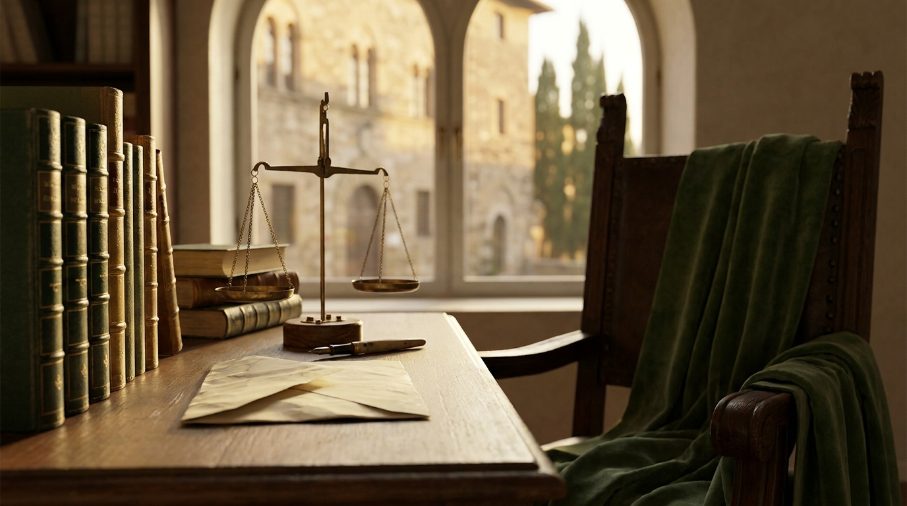

Malattia per depressione e attività ludiche: quando il licenziamento è illegittimo
La Cassazione ha dichiarato illegittimo il licenziamento di una lavoratrice di call center, in malattia per depressione, sorpresa in attività ludiche esterne. Il datore non aveva provato la simulazione della malattia né un aggravamento della guarigione. La pronuncia chiarisce un punto delicato: la vita sociale non stressante può essere compatibile con lo stato depressivo e non prova, da sola, l'assenza di malattia.

Il caso
Una lavoratrice di call center, assente per una diagnosi di depressione, viene licenziata dalla cooperativa datrice dopo essere stata sorpresa in attività ricreative esterne al domicilio. La tesi datoriale: la malattia era simulata, oppure le attività compiute ne rallentavano la guarigione. La Corte d'Appello di Milano dà ragione alla lavoratrice; la Cassazione conferma, dichiarando il licenziamento illegittimo.
Il nodo non è la presenza fuori casa, ma il significato che le si attribuisce. Chi soffre di depressione può trarre beneficio da momenti di socialità leggera: uscire non equivale a mentire sulla propria condizione.
Inquadramento normativo
La disciplina di riferimento resta la Legge n. 604 del 1966, che impone al licenziamento un giustificato motivo. Quando il datore contesta la simulazione della malattia o una condotta del lavoratore che ne pregiudica la guarigione, deve fornirne la prova. Non basta l'osservazione di comportamenti "anomali": occorre dimostrare, in concreto, che l'attività svolta sia incompatibile con la patologia dichiarata o ne ritardi il recupero.
L'onere della prova, in altre parole, grava sul datore di lavoro. È lui che allega il fatto disciplinarmente rilevante (la simulazione o l'aggravamento) e deve sostanziarlo. Un'inferenza — "esce, dunque non è malato" — non regge quando la diagnosi è di natura psichica.
La Cassazione valorizza un dato clinico ormai consolidato: nelle patologie depressive l'isolamento è spesso parte del problema, non della cura. Un'attività sociale non stressante può inserirsi in un percorso di recupero. Da qui l'assenza di quel contrasto oggettivo tra condotta e malattia che avrebbe potuto legittimare il recesso.
Implicazioni pratiche
Per il lavoratore, la pronuncia offre una tutela concreta contro i controlli disciplinari costruiti su presunzioni. La malattia psichica non impone la reclusione domiciliare: ciò che conta è la coerenza tra la condotta e la diagnosi, valutata secondo criteri medici, non morali.
Resta però un limite. La compatibilità va misurata caso per caso. Un'attività manifestamente incompatibile con la patologia — o svolta durante le fasce orarie di reperibilità per la visita fiscale — può ancora esporre a conseguenze. La sentenza non autorizza qualsiasi comportamento: circoscrive i poteri del datore che agisce su base indiziaria.
Per il datore di lavoro, il messaggio è netto. L'investigazione sul dipendente in malattia deve produrre prove qualificate, preferibilmente supportate da valutazione medico-legale. Un licenziamento fondato sul solo pedinamento, senza dimostrazione dell'incompatibilità clinica, rischia di essere annullato con i costi che ne conseguono.
Per le patologie a base psichica, in particolare, l'approccio prudenziale è d'obbligo: la valutazione richiede competenze specialistiche che il datore non possiede e non può surrogare con il buon senso.
Cosa fare in concreto
- Lavoratori: durante la malattia, rispettate le fasce orarie di reperibilità e conservate la documentazione clinica che attesta diagnosi e percorso terapeutico.
- Lavoratori: se ricevete una contestazione disciplinare basata su presunte attività incompatibili, chiedete l'esibizione degli elementi probatori e non rilasciate giustificazioni improvvisate.
- Datori di lavoro: prima di procedere, acquisite una valutazione medico-legale sull'effettiva incompatibilità tra la condotta osservata e la patologia diagnosticata.
- Datori di lavoro: verificate che l'attività investigativa sia legittima e rispetti i limiti dello Statuto dei lavoratori sui controlli difensivi.
- Entrambe le parti: documentate ogni passaggio per iscritto; nel contenzioso sul licenziamento la prova scritta è decisiva.
Consigliamo, in tutti i casi che coinvolgono la salute mentale del lavoratore, di far precedere ogni iniziativa da una valutazione tecnica congiunta — legale e medica — perché l'errore di qualificazione qui è particolarmente frequente e costoso.
---
*Contributo informativo a cura di Tamburro & Partners - Avv. Giuseppe Tamburro. Non costituisce parere legale.*
Ogni storia di lavoro ha i suoi tempi.
Se gestisci HR e vuoi un confronto su contenzioso, ispezioni o licenziamenti, scrivi allo studio. Ti rispondiamo entro un giorno lavorativo.